Jarod TORUN
Design student - Design by Making.
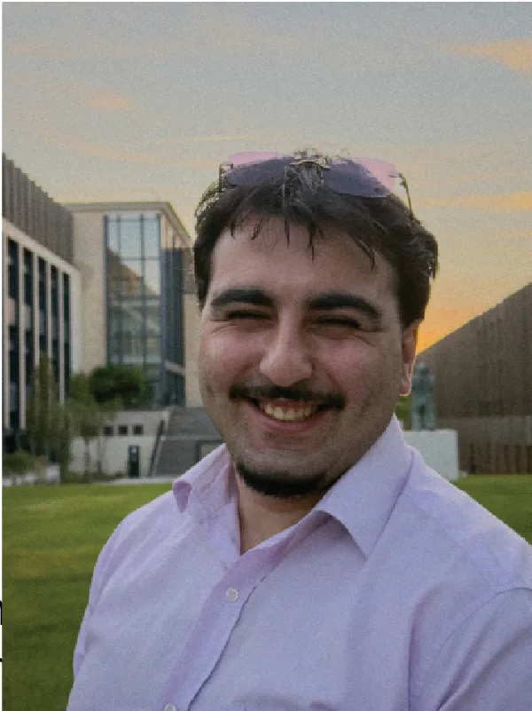
Usage-driven design, focused on material exploration and experimentation to propose concrete, relevant and functional solutions.
I approach design through making, testing, and experimentation aiming to improve everyday use.
Education
- 2025 - Present : CY école de Design / Second-year student in Global Design
- 2023 - 2025 : CY école de Design / Preparatory cycle in Computer Science Engineering and Design
- 2023 : French Baccalaureate / Mathematics and Physics-Chemistry (With Honors)
Skills
- Object / Product design
- Tinkering / Improvised engineering / Hardware development
- 3D Modeling
- Prototyping
Tools
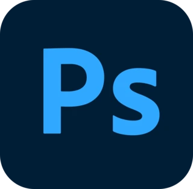
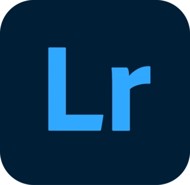
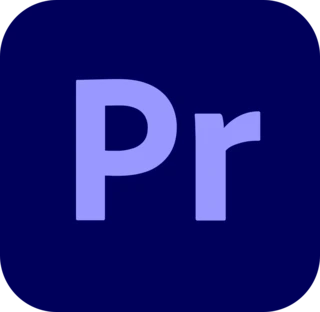
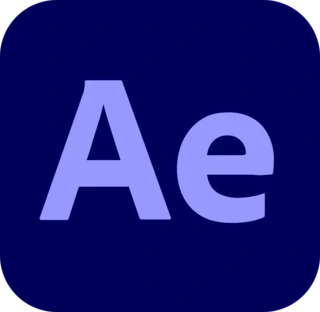
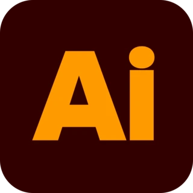
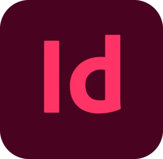
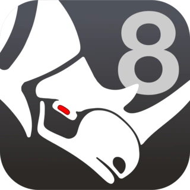
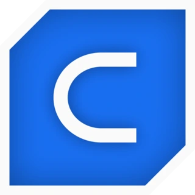
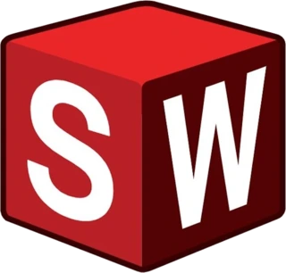
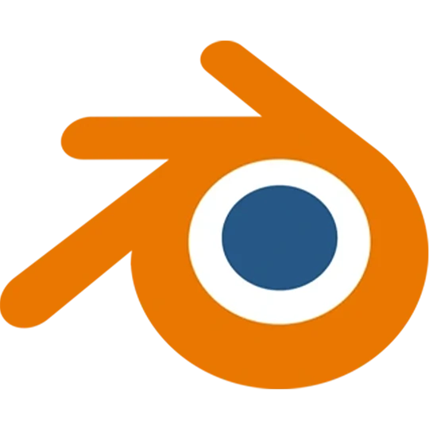
Experience
June 2026 : 1-month internship / Le Bâtisseur (construction company)
Graphic identity redesign
2020 : Retail internship / Benim Market (La Rochelle)
Customer interaction, stock management, autonomy
Partnerships & Projects
FFF (French Football Federation) : Pulse project
Design of a haptic case and mobile ecosystem to counter screen addiction among young people.
Elba / Shiseido Group : The Cube project
Design of a modular, reusable sales fixture adapted to luxury industry standards.
Le Crous : Break Shot project
Restoration and revalorization of a 70-year-old historic furniture piece.
Hôpital Jean Verdier
Design of objects and services to improve the care pathway and well-being of children in a sterile hospital environment.
Melvita
Design of a customer journey and an innovative retail experience for the brand.
CEREMA
Research and design of applications around the reuse of raw earth excavated from construction sites.
Edossah
Design of tools and services facilitating co-construction between nonprofit organizations and funders.
Languages
- French
- English
- Turkish